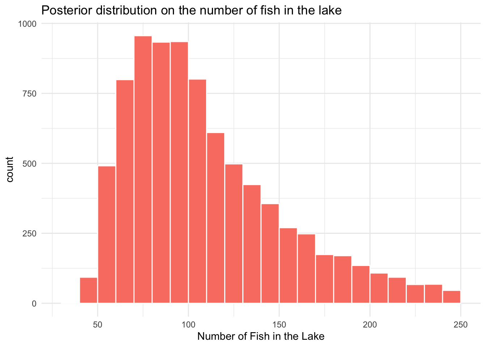

Thursday, October 5, 2022
Today
- More examples of Bayesian data analyses
How many fish are in the lake?
A common problem in wildlife management is the estimation of a species abundance. For example: Start by catching and marking 20 fish. Then after some time catch another 20 fish and count how many of them have a mark. Suppose that out of the 20 fish caught 5 are marked. How many fish are in the lake?
Parameter = Number of fish in the lake (the unknown that you want to estimate) Generative Model: First mark 20 fish and release them back into the lake, then recapture 20 fish and count how many are marked.
Data: Five of the 20 fish were marked.
Here is what you will do to answer the question how many fish are in the lake.
- Draw a random sample from the prior distribution on the parameter.
- Plug in each sampled value (draw) into the generative model to get a vector of ‘fake’ data. For example: If the number of fish in the lake is 80 you might get four marked fish on our recapture sample. If the number of fish is only 30, you might get 13 marked fish on our sample, etc. That makes sense, right?
- Keep only those parameter values that generated the data that was actually observed (5 out of the 20 sampled).
Let’s see this in action with code. Draw a large (M = 100000) sample from the prior distribution (discrete uniform) on the parameter representing the number of fish in the lake (priorNF). Here you use the sample() function on a vector of counts between 21 and 250.
M <- 100000
priorNF <- sample(21:250, size = M, replace = TRUE)
head(priorNF, n = 20)## [1] 237 45 127 89 119 25 67 105 64 238 139 56 61 140 126 102 62 103 131
## [20] 217The result is a vector of length M containing counts with values between 21 and 250. What is the shape on the distribution of values?
head(table(priorNF))## priorNF
## 21 22 23 24 25 26
## 466 450 437 410 491 448tail(table(priorNF))## priorNF
## 245 246 247 248 249 250
## 418 431 431 450 410 410Plot a histogram of the parameter values.
library(ggplot2)
ggplot(data = as.data.frame(priorNF),
mapping = aes(priorNF)) +
geom_histogram(binwidth = 10, boundary = 20,
color = "white", fill = "salmon") +
xlab("Number of Fish in the Lake") +
ggtitle(label = "Prior distribution on the number of fish in the lake") +
theme_minimal()Uniform distribution. This is how you should start if you have no knowledge about how many fish are in the lake. You are maximally non-committal to any particular count.
Next you define the generative model. Here you create a function that takes a value for the unknown parameter (number of fish in the lake) as input and returns a data value. The data value is the number of tagged fish on recapture.
Suppose for example that the number of fish in the lake is in fact 63. Then you set up a vector of length 63 where 20 are labeled as marked and 63 - 20 = 43 are labeled as not marked.
fish <- rep(0:1, c(63 - 20, 20))
fish## [1] 0 0 0 0 0 0 0 0 0 0 0 0 0 0 0 0 0 0 0 0 0 0 0 0 0 0 0 0 0 0 0 0 0 0 0 0 0 0
## [39] 0 0 0 0 0 1 1 1 1 1 1 1 1 1 1 1 1 1 1 1 1 1 1 1 1Then you take a sample of size 20 without replacement (this is equivalent to catching 20 fish in a lake with 63 fish of which twenty of them are marked) from this vector and add the sampled values. This value represents the number of fish caught that were marked.
sum(sample(fish, size = 20))## [1] 6Sample and sum again.
Let’s save 1000 of these and then make a histogram. The for(){} function is used to create a loop over this process of sampling and summing. Here it says to repeat the sample and sum 1000 times. j is used as a ‘dummy’ indexing the set of integers between 1 and 1000. Each time you get a sum nM you include it as an element in the vector nMarked.
nMarked <- numeric()
for(j in 1:1000){
nM <- sum(sample(fish, 20))
nMarked <- c(nMarked, nM)
}
ggplot(data = as.data.frame(nMarked),
mapping = aes(nMarked)) +
geom_histogram(breaks = seq(-.5, 12.5, 1),
color = "white", fill = "salmon") +
xlab("Number of Recaptured Fish") +
ggtitle(label = "Conditional likelihood on the number of recaptured fish") +
theme_minimal()This tells us that IF the number of fish in the lake is 63, the most likely number of marked recaptures would be either 6 or 7.
But what if the number of fish in the lake is 64 or 74, or any other number? That is exactly what you want to estimate. So you create a function from your sampling code.
pickFish <- function(priorNF){
fish <- rep(0:1, c(priorNF - 20, 20))
sum(sample(fish, 20))
}The function() function takes as it’s single input the prior guess at the number of fish in the lake. The two lines of code between the left { and the right } samples and sums. The only thing returned by the function is the number of marked fish on recapture. The function is assigned to the object you call pickFish().
To apply the function include a guess at the number of fish in the lake.
pickFish(104)## [1] 4pickFish(priorNF[10])## [1] 4Now you can simulate the data. The data are the number of marked fish on the recapture given a parameter value. The parameter values come from the prior distribution. You start by ‘initializing’ the object nMarked.
nMarked <- NULL
for(i in 1:M) {
nMarked[i] <- pickFish(priorNF[i])
}
head(nMarked)## [1] 1 8 3 5 3 17The for loop uses the pickFish() function for each count in the prior and there are M of them. The output of applying the function is saved, element by element, in the vector nMarked.
Finally, you keep only those parameter values that resulted in the data you actually observed (5 marked fish re-caught) and plot those as a histogram.
postNF <- priorNF[nMarked == 5]
ggplot(data = as.data.frame(postNF),
mapping = aes(postNF)) +
geom_histogram(binwidth = 10, boundary = 20,
color = "white", fill = "salmon") +
xlab("Number of Fish in the Lake") +
ggtitle(label = "Posterior distribution on the number of fish in the lake") +
theme_minimal()
The result is a distribution on the unknown parameter (number of fish in the lake). It is called the posterior distribution. It shows us how many times the particular value of number of fish in the lake results in 5 out of 20 marked on recapture.
It tells us that it is unlikely there are more than 200 or less than 50 fish in the lake.
For insight, put the prior and posterior values into a data frame.
df <- data.frame(Distribution = rep(c("(A) Prior Distribution",
"(B) Posterior Distribution"),
c(M, length(postNF))),
Values = c(priorNF, postNF))
head(df)## Distribution Values
## 1 (A) Prior Distribution 237
## 2 (A) Prior Distribution 45
## 3 (A) Prior Distribution 127
## 4 (A) Prior Distribution 89
## 5 (A) Prior Distribution 119
## 6 (A) Prior Distribution 25tail(df)## Distribution Values
## 108273 (B) Posterior Distribution 120
## 108274 (B) Posterior Distribution 62
## 108275 (B) Posterior Distribution 165
## 108276 (B) Posterior Distribution 98
## 108277 (B) Posterior Distribution 117
## 108278 (B) Posterior Distribution 78Then plot the prior and posterior distributions side by side.
ggplot(data = df,
mapping = aes(x = Values)) +
geom_histogram(aes(y = (..density..) * 20),
binwidth = 10, color = "white",
fill = "salmon") +
scale_x_continuous(limits = c(20, 250)) +
facet_wrap(~ Distribution, ncol = 1) +
xlab("Number of Fish in the Lake") +
ylab("Probability") +
ggtitle(label = "How many fish are there in the lake?") +
theme_minimal()## Warning: Removed 4 rows containing missing values (geom_bar).As an answer to the question how many fish are in the lake, you start by thinking that there is no preference for any number between 20 and 250. That uniform uncertainty is the prior. It is quantified as a uniform distribution.
Then, after collecting data and combining the information with the prior, the uncertainty is reduced. The reduction in uncertainty is seen in the posterior distribution.
The most likely value for the number of fish in the lake is somewhere between 70 and 120 as seen by location of the tallest bar in the histogram. There is a 50% chance that the number of fish in the lake is between 78 and 132. This is obtained by using the quantile() function on the posterior values stored in postNF.
quantile(postNF, probs = c(.25, .75))## 25% 75%
## 78 132If you want to be 95% certain of the correct answer to the question then you increase the interval to
quantile(postNF, probs = c(.025, .975))## 2.5% 97.5%
## 54 218If you need to make a single best guess you take the median of the posterior.
median(postNF)## [1] 100Let’s look at the bars centered on the value of 100 fish. You start with the prior. The probability that there are 100 fish (more precisely between 90 & 110 fish) in the lake before you mark and recapture is .09 (9%). You write this as
P(100 fish) = 9%
After observing 5 marked fish in 20 on the recapture the probability increases to 20%. You write this as
P(100 fish | 5 marked recaptured) = 20%
Combining the prior with data results in the posterior. P(\(\theta\) | D) \(\propto\) P(\(\theta\)) \(\times\) P(D | \(\theta\)): Bayes Theorem.
In this example you used a capture-recapture model with one parameter. But the general method works on any generative model and with any number of parameters.
The specific computational method (approximate Bayes calculation: ABC) you used only works in rare cases.
Why use Bayesian data analysis?
You can build more flexible models. You can use models to answer specific questions in a natural way. For example, what is the probability that the number of fish in the lake exceeds 200?
sum(postNF > 200)/length(postNF) * 100## [1] 4.614641Less the 5% chance. Note: There is no reference null hypothesis or \(p\)-value.
Suppose you get some additional data. Let’s say you catch another sample of fish from the lake and find that 6 are marked. You can use your posterior distribution as the new prior distribution.
nMarked <- NULL
for(i in 1:length(postNF)) {
nMarked[i] <- pickFish(postNF[i])
}
post2NF <- postNF[nMarked == 6]Again put the prior and posterior in a single data frame and plot.
df <- data.frame(Distribution = rep(c("(A) Prior Distribution", "(B) Posterior Distribution"),
c(length(postNF), length(post2NF))),
Values = c(postNF, post2NF))
ggplot(data = df,
mapping = aes(x = Values)) +
geom_histogram(aes(y = (..density..) * 20),
binwidth = 10, color = "white",
fill = "salmon") +
scale_x_continuous(limits = c(20, 250)) +
facet_wrap(~ Distribution, ncol = 1) +
xlab("Number of Fish in the Lake") +
ylab("Probability") +
ggtitle(label = "How many fish are there in the lake?") +
theme_minimal()## Warning: Removed 4 rows containing missing values (geom_bar).The new data pushes the posterior median toward a lower count relative to the posterior median from the original model. It also considerably reduces the uncertainty. Given this model, the probability that there are more than 200 fish in the lake is about .1%, down from 5%.
median(post2NF)## [1] 79sum(post2NF > 200)/length(post2NF) * 100## [1] 0Percentage of survey signups
Let’s consider another example. You are studying attitudes toward race in America since the election of Trump and you want to determine the likely response rate before you send out a large survey on attitudes. I use the pronoun ‘you’ because I really want you to imagine yourself in this situation.
Your adviser suggests that you will get the best response rate using an email listserv (your advisor is obviously older than you). So you ask 16 people on the listserv and get 6 positive responses (6 are willing to take your survey): 6/16 = 38%
What is a good guess for the positive response rate when you start sending out the survey to everyone on the listserv? How uncertain is this guess? Perhaps 38% is good guess, but the uncertainty is large.
Recall: A Bayesian data analysis requires three things: 1) Data, 2) Generative Model, and 3) Prior: information you have before examining the data.
A generative model for people agreeing to take your survey
A. Assume there is single underlying rate at which each person agrees to take your survey. Say 55%. B. “Ask” a number of people, where the chance of each person agreeing to take the survey is 55%.
“Ask” is in quotes because you are not going to actual ask. Rather you will use a random number function where the probability of getting a ‘yes’ is 55% and the probability of getting ‘no’ is 45%.
set.seed(3045)
sample(c("yes", "no"),
size = 16,
prob = c(.55, .45),
replace = TRUE)## [1] "yes" "no" "yes" "yes" "yes" "yes" "yes" "no" "yes" "yes" "no" "no"
## [13] "no" "no" "no" "yes"C. Count how many people agreed to be surveyed.
In this case it is 9/16.
This is your generative model. A model where you can plug in the rate (parameter of interest) and generate data. Parameter values (e.g., 55%) –> Ask 16 people –> Data (positive response rate).
The problem is these simulated data are not really what you want. In fact you want just the opposite. You have data. You know that when you asked 16 actual people 6 of them said ‘yes.’
You want to go backwards. You have P(D|\(\theta\)) but you want P(\(\theta\)|D). From the data you want to figure out what the response rate could be. Data –> Parameter values (theta?). What are reasonable values for theta that would give you the data you have (6 out 16).
The good news is you’re almost there. You just need one more thing; a prior.
Prior for the response rate
What information do you have before seeing the data?
You need to use probability to represent uncertainty in all parts of your model. You have already included uncertainty in the generative model (e.g., through the sample function). But you need to include it on the parameter.
Here as before, you represent the uncertainty about the response rate as a uniform distribution between 0 and 1. Prior to seeing any data you assume that the response rate is equally likely to be any value between 0 and 100%.
Generate values from the prior and plot the distribution. Always a good idea to look at the distribution of your prior. Is it reasonable?
library(ggplot2)
M <- 100000
priorRate <- runif(n = M, min = 0, max = 1)
ggplot(data = as.data.frame(priorRate),
mapping = aes(x = priorRate)) +
geom_histogram(binwidth = .1, boundary = 1,
color = "white", fill = "gray") +
xlab("Response Rate") +
ggtitle(lab = "Prior distribution on the survey response rate") +
theme_minimal()
Define the generative model and simulate the data
You could use the sample() function as before and then added up all the yes responses but here the rbinom() function does that for you. It returns the number of 1’s in a sample of size = (here 16) when the probability of agreeing equals the rate.
genModel <- function(rate){
nYes <- rbinom(1, size = 16, prob = rate)
nYes
}
nYes <- NULL
for(i in 1:M) {
nYes[i] <- genModel(priorRate[i])
}Keep only those parameter values that resulted in the data that you actually observed (6 “yes”’s). Check that there are enough samples remaining (at least 1000).
postRate <- priorRate[nYes == 6]
length(postRate)## [1] 5792Plot a histogram from the posterior values.
ggplot(data = as.data.frame(postRate),
mapping = aes(x = postRate)) +
geom_histogram(binwidth = .05, boundary = 1,
color = "white", fill = "gray") +
scale_x_continuous(limits = c(0, 1)) +
xlab("Response Rate") +
ggtitle(lab = "Posterior distribution on the survey response rate") +
theme_minimal()Use sample statistic functions to summarize information about the posterior distribution.
median(postRate)## [1] 0.3850391quantile(postRate, probs = c(.25, .75))## 25% 75%
## 0.3102800 0.4661823A good estimate of the response rate is 39% with there being a 50% (75% - 25%) chance that the response rate will be between 31% and 46%.
There is slightly more than a 1% chance that you will do better than a 65% positive response rate.
sum(postRate > .65)/length(postRate) * 100## [1] 1.260359Plot the prior and posterior distributions together.
df <- data.frame(Distribution = rep(c("(A) Prior Distribution",
"(B) Posterior Distribution"),
c(M, length(postRate))),
Rate = c(priorRate, postRate))
ggplot(data = df,
mapping = aes(x = Rate)) +
geom_histogram(aes(y = (..density..) * .1), binwidth = .05, boundary = 1,
color = "white", fill = "gray") +
scale_x_continuous(limits = c(0, 1)) +
facet_wrap(~ Distribution, ncol = 1) +
ylab("Probability") +
xlab("Response Rate") +
theme_minimal()So how did you go from the prior to the posterior? Let’s take a response rate of 35% as an example. First a response rate of 35% had to be drawn from the prior and it did it with some probability you denote P(35%). That is, the probability of drawing a response rate of 35% is P(35%).
Now in order to keep this 35% it had to simulate data that matched the data you actually observed. And it did that with some probability that you denote P(6 “yes” | 35%). Probability of 6 positive responses (out of 16) given a response rate of 35%. Recall: the vertical line is read: “given.”
By multiplying these two probabilities you get the probability that 35% is the best estimate for the response rate given 6 yes responses, proportionally. That is, \[ P(35\% | 6 ) \propto P(35\%) \times P(6 | 35\%) \]
To turn that proportionality into an equality you need to divide by the sum of all parameter value probabilities given the data. \[ P(35\% | 6 ) = \frac{P(35\%) \times P(6 | 35\%)}{\sum P(\theta\%) \times P(6 | \theta\%)} \]
To review: You specified prior information \(P(\theta)\), a generative model \(P(D|\theta)\), and you calculated probabilities for the different parameter values given the data. In this case there was a single parameter value indicating the response rate.
But the cool thing is this general method works for any generative model and any number of parameter values. \[ P(\theta | D) = \frac{P(\theta) \times P(D|\theta)}{\sum P(\theta) \times P(D|\theta)} \] Bayes Theorem.
Prediction
Suppose the listserv you used had 100 people. What is the likely number of surveys that will get returned?
- The answer is not a single number but a distribution over probable number of survey takers.
- As before, the binomial distribution is a good candidate for how many people are willing to take the survey out of the 100 possible.
- Don’t ‘throw away’ uncertainty, for example by using a summary of the posterior distribution. Instead use the full original posterior sample (all the values in the posterior).
- The general pattern when calculating ‘derivatives’ of posterior values is to go through the values one-by-one, and perform a transformation (say, plugging in the value in a binomial distribution), and collect the new values in a vector.
For example the first six values in the vector of posterior values are:
postRate[1:6]## [1] 0.4820880 0.2671866 0.3797752 0.3082588 0.2774445 0.2366580You can multiply any of these by 100 (and round) to get a count. But what value do you choose? Also, given a rate the count is a random value.
nSurveysX <- round(100 * postRate, 0)To get a prediction about how many responses you need to take both these uncertainties into account.
This can be done with a for loop.
nSurveys <- NULL
for(i in 1:length(postRate)){
nSurveys[i] <- rbinom(n = 1, size = 100,
prob = postRate[i])
}But since rbinom() is vectorized (calculations are done in tandem) you can simply write it like this:
nSurveys <- rbinom(n = length(postRate),
size = 100,
prob = postRate)
ggplot(data = as.data.frame(nSurveys),
mapping = aes(x = nSurveys)) +
geom_histogram(binwidth = 5, color = "white") +
xlab("Number of Responses") +
ggtitle(lab = "Posterior predicted number of responses",
subtitle = "Given that 100 people were asked") +
theme_minimal()So you are most likely to get about 40 surveys returned but it could be anywhere between 20 and 60.
Compare with nSurveysX where only one source of uncertainty is included.
df <- data.frame(Uncertainty = c(rep("Both", length(nSurveys)), rep("One", length(nSurveysX))),
nSurveys = c(nSurveys, nSurveysX))
ggplot(data = df,
mapping = aes(x = nSurveys)) +
geom_histogram(binwidth = 5, color = "white") +
facet_wrap(~ Uncertainty) +
xlab("Number of Responses") +
ggtitle(lab = "Posterior predicted number of responses",
subtitle = "Given that 100 people were asked") +
theme_minimal()The histogram is slightly wider when both sources of uncertainty are included. Quantitatively you can see this with
quantile(nSurveys, probs = c(.25, .75))## 25% 75%
## 30 47quantile(nSurveysX, probs = c(.25, .75))## 25% 75%
## 31 47Approximate Bayesian computation
The approximate Bayesian computation only works in rare cases. Conceptually easy, but very slow. Other much faster methods are available. All with the same end result (posterior distribution).
You don’t really need to worry about how they work precisely. They are just different ways of applying Bayes Theorem (combining the prior with the generative model (likelihood function) to get the posterior).
What Bayesian data analysis is not
A category of models (e.g., regression models, decision trees). Rather it is a way of thinking about and constructing models. You can do regression or machine learning with a Bayesian framework (e.g., Bayesian decision analysis).
Not subjective. All statistics require you make assumptions. Results have to be interpreted in light of those assumptions.
Nothing new. Thomas Bayes, Simon LaPlace, Ronald Fischer (first to use the term Bayesian statistics).
Comparing two hypotheses
Recall that your adviser suggested that you will get the best response rate using a listserv. So you asked 16 people on the listserv and get 6 to respond positively (they would be willing to take your survey).
However, you feel that using social media might be better. So you direct message 16 randomly selected people from your twitter followers and get 10 people to respond positively.
Which seems to be the better method? Yes, there is some evidence that using social media is better. But how certain or uncertain should you be that this is the case?
You want to specify and fit a Bayesian model to answer these questions. The cool thing is that all you need to do is copy and paste the single-rate model.
Define and draw from the prior distributions.
priorRate1 <- runif(n = M, min = 0, max = 1)
priorRate2 <- runif(n = M, min = 0, max = 1)Generate data.
nYes1 = NULL
nYes2 = NULL
for(i in 1:M) {
nYes1[i] <- genModel(priorRate1[i])
nYes2[i] <- genModel(priorRate2[i])
}Keep only those parameter values that result in the data that you actually observed (6 “yes”’s with rate 1 and 10 “yes”’s with rate 2).
postRate1 <- priorRate1[nYes1 == 6]
postRate2 <- priorRate2[nYes2 == 10]
difference <- postRate2 - postRate1## Warning in postRate2 - postRate1: longer object length is not a multiple of
## shorter object lengthggplot(data = as.data.frame(difference),
mapping = aes(x = difference)) +
geom_histogram(binwidth = .05, boundary = 0, color = "white") +
geom_vline(xintercept = 0, color = "red") +
xlab("Difference in Response Rates") +
ggtitle(lab = "Posterior distribution of difference in response rates") +
theme_minimal()Positive differences indicate you are correct and that using social media will give you a better response rate.
What is the probability you are correct? That is answered from the posterior values as the relative number of positive differences.
sum(difference > 0)/length(difference) * 100## [1] 91.6091Reaction times while driving
Cell phone use while driving is believed to increase the chance of an accident due to slowed reaction time. Recall that the data set reaction.time {UsingR} gives the time it takes to react to an external event while driving by various groups.
df <- UsingR::reaction.time
str(df)## 'data.frame': 60 obs. of 4 variables:
## $ age : Factor w/ 2 levels "16-24","25+": 1 1 1 1 1 1 1 1 1 1 ...
## $ gender : Factor w/ 2 levels "F","M": 1 2 2 1 2 2 2 1 1 2 ...
## $ control: Factor w/ 2 levels "C","T": 2 2 2 2 2 1 2 2 2 1 ...
## $ time : num 1.36 1.47 1.51 1.39 1.38 ...The numeric variable ‘time’ is the reaction time in seconds. This is the response variable. The factor variable ‘control’ has two groups ‘C’ control (not using cell phone) and ‘T’ (using cell). The groups are not paired. The data set is in the long format.
Suppose you’re asked to see if the reaction time is shorter for those not using a cell phone. Start with a box plot of reaction times for the two groups (C: control and T: cell phone users).
ggplot(data = df,
mapping = aes(x = control, y = time)) +
geom_boxplot()In the classical setting you use a \(t\)-test to examine whether the reaction time is slower for those not using a phone. In this setting the null hypothesis is that there is no difference in reaction times.
You use the model syntax: response ~ explanatory as the first argument in the t.test() function. You include an argument that names the data frame where the columns time and control are located. Here the alternative hypothesis is the reaction time is shorter in the control group so you include the argument alternative = 'less'.
t.test(time ~ control,
data = df,
alternative = 'less')##
## Welch Two Sample t-test
##
## data: time by control
## t = -2.2052, df = 29.834, p-value = 0.01765
## alternative hypothesis: true difference in means between group C and group T is less than 0
## 95 percent confidence interval:
## -Inf -0.01288125
## sample estimates:
## mean in group C mean in group T
## 1.389613 1.445571The evidence in support of the null hypothesis that the reaction times are the same in the population is summarized by the \(p\)-value. The \(p\)-value is .0176, so you conclude there is moderate evidence indicating cell phone use slows reaction times.
In a Bayesian setting, you can answer the question: what is the probability that mean reaction time is longer when using the phone?
The package {bayesAB} provides functions to analyze these kinds of comparison problems in a Bayesian framework. It is intended as a replacement for common hypothesis tests like the t-test and the chi-squared test.
control <- df$time[df$control == "C"]
cellUse <- df$time[df$control == "T"]
t.test(control, cellUse, alternative = 'less')##
## Welch Two Sample t-test
##
## data: control and cellUse
## t = -2.2052, df = 29.834, p-value = 0.01765
## alternative hypothesis: true difference in means is less than 0
## 95 percent confidence interval:
## -Inf -0.01288125
## sample estimates:
## mean of x mean of y
## 1.389613 1.445571Here the hyper priors come from a normal-inverse-gamma distribution.
AB <- bayesAB::bayesTest(cellUse, control,
priors = c('mu' = 0, 'lambda' = 1, 'alpha' = 1, 'beta' = 1),
distribution = "normal")
summary(AB)## Quantiles of posteriors for A and B:
##
## $Mu
## $Mu$A
## 0% 25% 50% 75% 100%
## 1.176399 1.376478 1.410490 1.444104 1.657856
##
## $Mu$B
## 0% 25% 50% 75% 100%
## 0.8270401 1.2602478 1.3234247 1.3875455 1.8063457
##
##
## $Sig_Sq
## $Sig_Sq$A
## 0% 25% 50% 75% 100%
## 0.04577819 0.08921473 0.10295778 0.11990917 0.29091943
##
## $Sig_Sq$B
## 0% 25% 50% 75% 100%
## 0.05628581 0.15481025 0.18908270 0.23426011 0.89825548
##
##
## --------------------------------------------
##
## P(A > B) by (0, 0)%:
##
## $Mu
## [1] 0.78829
##
## $Sig_Sq
## [1] 0.04959
##
## --------------------------------------------
##
## Credible Interval on (A - B) / B for interval length(s) (0.9, 0.9) :
##
## $Mu
## 5% 95%
## -0.06527243 0.22799916
##
## $Sig_Sq
## 5% 95%
## -0.714669531 -0.001414716
##
## --------------------------------------------
##
## Posterior Expected Loss for choosing A over B:
##
## $Mu
## [1] 0.0100392
##
## $Sig_Sq
## [1] 0.997203The answer to our question is given after the $Mu in the output chunk that begins with P(A > B) by (0, 0)%: .79 or 79% plus or minus 5%.
You can use the plot method on our bayesAB object to plot the prior and posterior distributions.
plot(AB)Repeat the survey example
Here you repeat the survey example using function from the {bayesAB} package.
yourAdvisor <- c(1, 1, 1, 1, 1, 1, 0, 0, 0, 0, 0, 0, 0, 0, 0, 0)
you <- c(1, 1, 1, 1, 1, 1, 1, 1, 1, 1, 0, 0, 0, 0, 0, 0)
AB <- bayesAB::bayesTest(you, yourAdvisor,
priors = c('alpha' = 1, 'beta' = 1),
distribution = "bernoulli")
summary(AB)## Quantiles of posteriors for A and B:
##
## $Probability
## $Probability$A
## 0% 25% 50% 75% 100%
## 0.1454211 0.5350259 0.6149686 0.6903685 0.9507137
##
## $Probability$B
## 0% 25% 50% 75% 100%
## 0.0581556 0.3089805 0.3848638 0.4651543 0.8241117
##
##
## --------------------------------------------
##
## P(A > B) by (0)%:
##
## $Probability
## [1] 0.91488
##
## --------------------------------------------
##
## Credible Interval on (A - B) / B for interval length(s) (0.9) :
##
## $Probability
## 5% 95%
## -0.08583841 2.03055869
##
## --------------------------------------------
##
## Posterior Expected Loss for choosing A over B:
##
## $Probability
## [1] 0.01554517More information: Bayes Theorem explained.